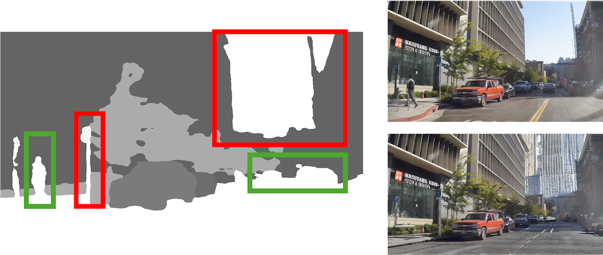

Cleaner StreetView (Writeup)
"Heaven and earth are huge, but they are alike in their transformations.
The ten thousand things are numerous, but they are one in their good order."
—Chuang Tzu (Watson trans.)
Problem Statement
For sequences of photos acquired over a spatiotemporal range, such as those in StreetView, we often care more about static components and landmarks in the scene, whereas dynamic, moving objects may be distracting and produce artifacts when performing reconstruction or interpolation on the scene. Here, we propose a pipeline to obtain Cleaner StreetView images, that combines inference on large, pretrained image models and classical stereo pose estimation techniques. We show several examples for visualization and highlight potential points for improvement.
| Fig. 1. Schematic of proposed pipeline. |
|---|
Segmentation
To identify individual objects in the scene, we simply pass each frame of the StreetView image sequence through a pretrained image model trained on panoptic segmentation. Here, we use Mask2Former, but other segmentation models can be readily used as well.
As shown in Fig. 2, the model is able to reliably segment out each object present in the image (in this case, the moving car), even as the object becomes more distant and is partially occluded in later frames.
| Fig. 2a. Original. | Fig. 2b. Segmented. |
|---|---|
Moving Object Identification
The key step of the pipeline is identifying which objects are moving. To do so, we leverage a key assumption that most points in the world are stationary and thus move coherently with a camera movement. Therefore, we can estimate the camera motion between two consecutive frames by estimating the fundamental matrix relating the two. We use a feature detector (SIFT) to identify keypoints in both frames, and use brute force pairwise matching to identify matching keypoints between the two frames.
Then, we estimate the fundamental matrix \(F\) using a RANSAC procedure that removes outliers, namely pairs of points \(p_1, p_2\) that do not satisfy the equation \(p_2^T F p_1 = 0\).
Indeed, we find that we are able to obtain a fundamental matrix consistent with most of the keypoints (Fig. 3a).
Given an estimated fundamental matrix, we evaluate the consistency of each segmented object with the inferred camera movement. In particular, we calculate the reprojection loss \(\frac{\|p_2^T F p_1\|}{\|F p_1\|_2}\) as the distance from \(p_2\) to the corresponding epipolar line \(F p_1\).
For each segmented object, we classify it as moving if the mean reprojection loss of all keypoints within the segmentation mask exceeds a threshold (Fig. 3b).
| Fig. 3a. Epipolar lines. | Fig. 3b. Moving objects. |
|---|---|
Inpainting
Once moving objects are identified, we can simply remove them with their corresponding segmentation masks, and pass the resultant image to an image inpainting model.
Here, we use Stable Diffusion, but we note that our pipeline is general to any inpainting model.
Example results are shown in Fig. 4, where we see that moving cars and pedestrians have been removed from the scene and inpainted with a plausible natural background.
| Fig. 4. Inpainted frames. |
|---|

|
Discussion
Our method benefits from both the versatility of modern computer vision models, as well as the robustness of classical computer vision algorithms. Panoptic segmentation models are able to precisely identify objects within the scene and diffusion models are able to generate visually compelling inpaintings from arbitrary masks, enhancing the overall quality of the output frames. At the same time, traditional SIFT keypoint detection, combined with fundamental matrix estimation and epipolar reprojection loss evaluation, enables reliable differentiation between static and moving elements that current machine learning models often struggle at.
Together, these methods enable us to perform StreetView cleaning with nearly no constraints as previous methods had: no camera pose or depth information needed!
Despite these promising results, the pipeline has some limitations. First, the accuracy of moving object identification relies heavily on the robustness of keypoint detection and matching algorithms. Real-world problems such as occlusion, different lighting conditions and camera parameters between frames, or lack of texture may degrade the quality of estimated fundamental matrices and, consequently, the classification of static and moving objects (Fig. 5). Future work could explore the integration of learned feature descriptors or deep learning-based motion estimation techniques to mitigate these issues.
| Fig. 5. Limitations. |
|---|
|  |
Comment: Scene understanding
Scene understanding is perhaps the holy grail of computer vision. A complete understanding of the scene should identify each object and describe its corresponding trajectory in the scene over time. This project is but a toy attempt at a system with this grand capacity, but it is already personally inspiring to be able to quantify and manipulate individual objects in the scene. Yet, an elegant formulation of scene understanding should perhaps not only perform the functions, but also be able to do so in a completely generalizable manner, even agnostic to individual object features. This unification cetainly seems to be out of reach for current methods, but it is also, at least personally, certainly an aspiriation worth striving for.